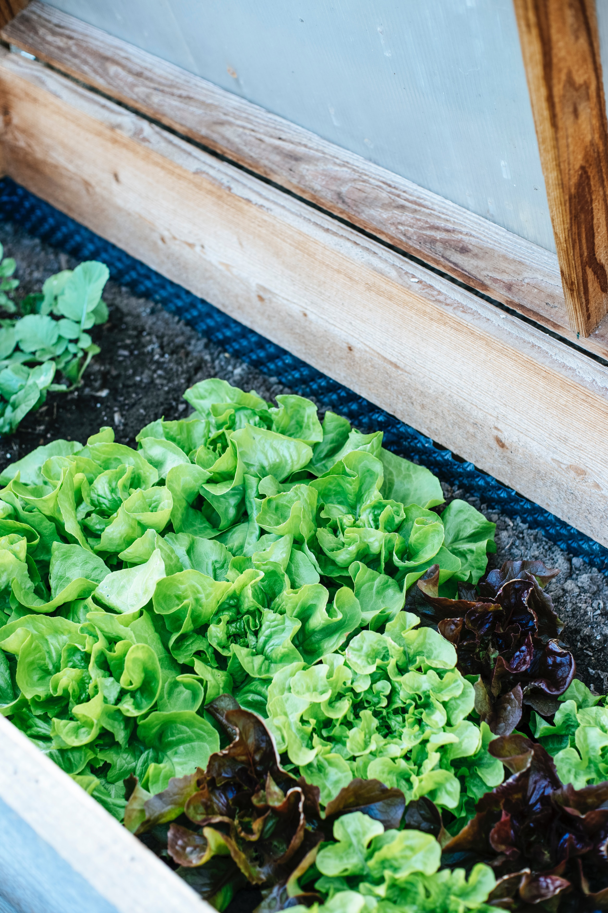

Growing Lettuce And Tomatoes
Lettuce is pretty easy to grow. Choose a planting location that is cool and shady. Make sure the soil drains well. Remove any weeds, rocks and sticks from the soil. Plant seeds or plants about 1/4 inch deep in rows 1 inch apart. Water regulary, keeping soil evenly moist. Harvest the lettuce when the leaves are big enough to eat.

Tomatoes need plenty of sun to grow. They need 6-8 hours of sun daily. Tomatoes grow better in moist, well-drained soil. Plant seeds or seedlings in warm soil after the last frost The hole should be deep enough to cover roots and a few inches of the seedling stem. Water regularly and plan to stake them as they grow. The fruit needs to stay off of the ground, you can use cages or plant stakes. Harvest when they have a deep rich color.
Additional Gardening Tips
Gardening help is readily available. Many home improvement stores offer free help and advice. Most cities have garden centers available also. Local colleges may have an agriculture department that can help with soil testing if needed. Don't be afraid to ask friends and neighbors also, most gardeners love sharing their tips!
The internet is also a great source of information. It is easy to google "gardening advice" and get thousands of suggestions. Videos are also available on your YouTube channel. Plant and seed companies usually offer advice on their websites. Some companies will offer a helpline or chat somewhere on their site too. Don't be embarrassed or afraid to ask, everyone is a beginner at one time or another.